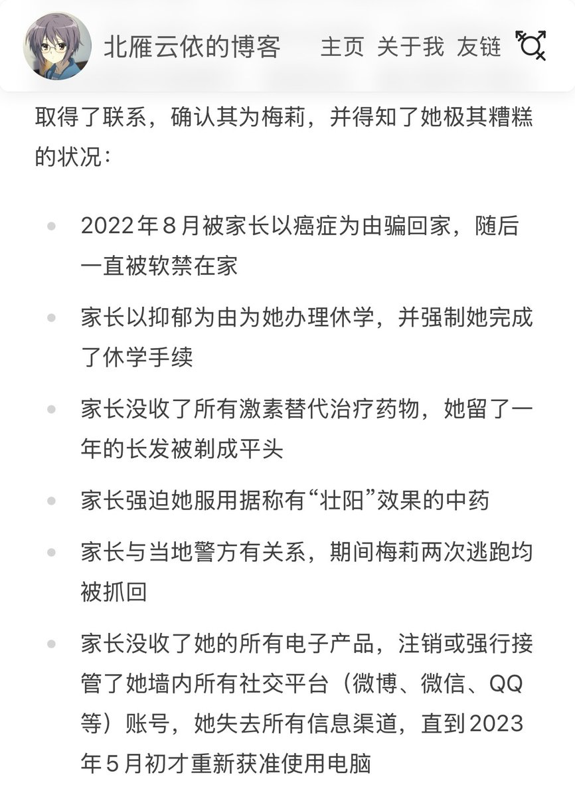
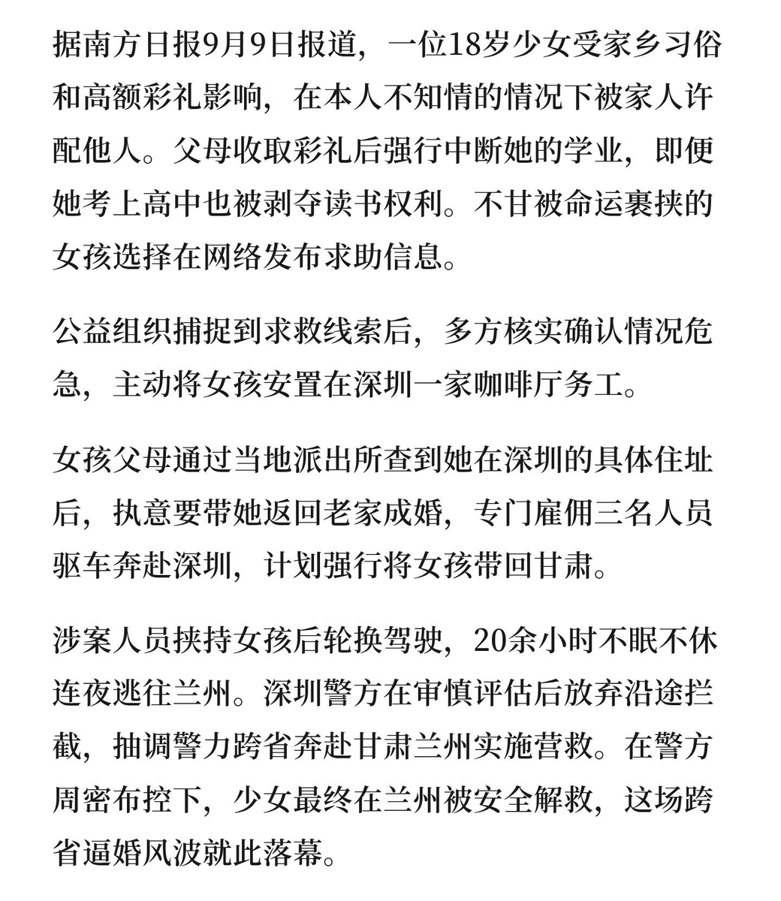
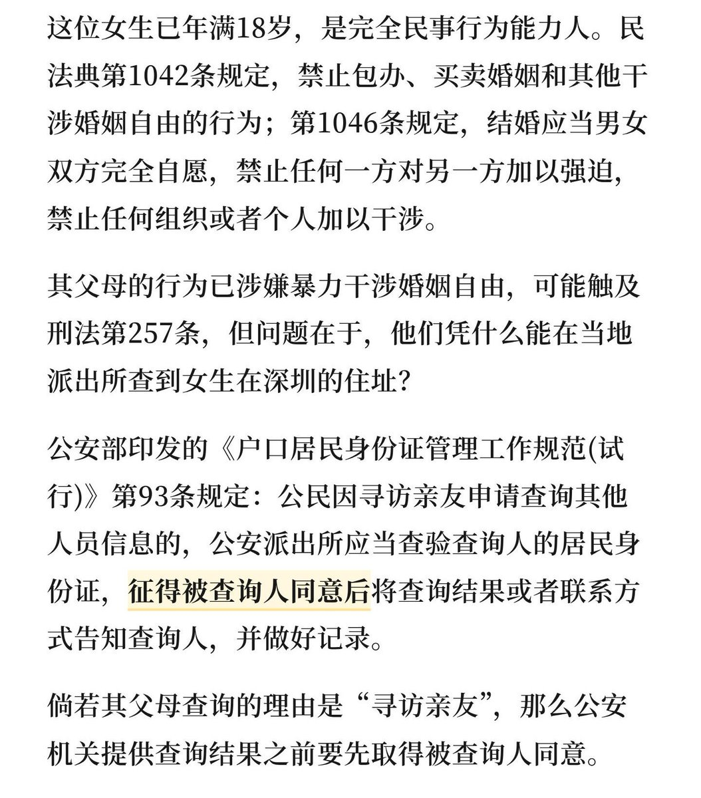

此事件就是对 trans misogyny 一个很好的说明。「家长能从当地警方处获取自己目前所在地理位置」跨女社群里稍微有点逃跑/救助经验的人都知道的常识性信息，此前也已经有无数跨女因此遭受过家庭暴力，但相关信息从未得到传播，因为人们认为跨女遭受此类暴力是咎由自取。正因相关信息得不到曝光，我们社群在对抗家长/警察监禁的经验，也无法传授给同样有高概率遭受此类暴力的顺女和其他性少数群体，且对于跨性别的污名化更能为加固家长权力提供理由，从而使其影响再次外溢到其她弱势群体身上




这件父母私下收了彩礼，雇人跑去深圳，强拐孩子回去结婚的事件有个细节。
就是女孩早就逃离了原生家庭，并没有在网上公开自己的地理位置，然后原生父母则是通过当地派出所，查到她在深圳的具体位置，然后雇了三个人，跨省把她强行带回去。
但现实是，如果是寻访亲友，派出所并不能直接提供信息。 https://t.co/kMoMdlF0L3 https://t.co/ylBVxywkz6
就是女孩早就逃离了原生家庭，并没有在网上公开自己的地理位置，然后原生父母则是通过当地派出所，查到她在深圳的具体位置，然后雇了三个人，跨省把她强行带回去。
但现实是，如果是寻访亲友，派出所并不能直接提供信息。 https://t.co/kMoMdlF0L3 https://t.co/ylBVxywkz6